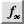

9 Combining text and numbers
This chapter shows you further ways in which you can use Fireworkz to
simplify tasks which would be much more complicated if you were using separate
word processor and spreadsheet programs.
Topics covered include:
- Working on a report which contains a mixture of text, tables containing live data and charts;
- Using Fireworkz' advanced features to keep your data up-to-date;
- Defining and using names in number and text cells;
- Creating and customising pictograms.
Adding a border to a table
Open the document report from the Tutorial directory.
You will see that it already contains a couple of sections of text, some
headings and a table. You will be adding to this in the course of
this chapter, as well as adding more formatting to the contents of the
document.
Scroll through the document to familiarise yourself with its contents.
You will see that there is a faint grid around all the cells and paragraphs.
This document was based on a Sheet template. It started off as a plain
spreadsheet, and the text was then added to it. Because of this, the document’s
table does not yet have a border set up around it, other than the faint grid.
The first step is to add a grid to make the table easier to read when the
document is printed out.
Because of the way Fireworkz draws grids, it is always a good idea to leave
a row/paragraph between the top of a table and the surrounding spreadsheet data.
This allows space for the table border.
You will see that there is such a pair of buffer rows in the document already.
You can shrink these down to around 0.3cm as follows:
- Point at the border between the buffer row above the table and the row beneath.
-
Press and hold the left mouse button and drag the row resize pointer upwards.
You can check the measurement of the row height by reading the measurement in the status line.
- When the row height is approximately 0.3cm, release the mouse button.
- Repeat this process for the buffer row below the table.
To add the border:
- Select the whole table by dragging from cell B6 right and down to cell F10.
-
Click the
Box tool button on the toolbar. The
Box dialogue box will appear.
-
Ensure that the
All radio button is selected.
-
Click the
Apply button.
The box will be drawn with standard thickness black lines around each of the cells.
-
Click the
Selection tool button on the toolbar
to clear the selection.
Referring to numbers in text
The text in this document mostly describes the contents of the tables.
As such, it is helpful to refer directly to the table contents.
Because the data in the tables is preliminary and is likely to be updated,
one option is to use names to refer to the data. Then, if the data is updated
in the table, the copy elsewhere in the document is updated too.
There is already an example of this set up in the document. In the
paragraph beneath the table, a line of text leads to a cell containing
the name Redbang, thereby displaying the current value of that name in
the cell. To see this:
- Click on cell C12. Redbang will appear in the formula line.
Setting up a name
Your first task when you want to use a name is to define it:
-

Click the
Function selector button.
-
Choose
from the menu which appears.
A dialogue box listing names which have already been defined will appear —
in this example the list contains just one name, Redbang.
-
Click the
Add button.
A further dialogue box will appear for you to define a new name.
-
You need to enter a name for the name, as well as its definition.
Enter Worst for the name,
enter the cell reference F8 for its value
and enter Bang per buck for Big boy for its (optional) description.
-
Click the
Create button.
Your new name will be added to the list of defined names.
Referring to a name in a number cell
Using names is simple:
- Click on cell C13.
-
Click the
Function selector button and
choose
from the menu again.
-
Choose
Worst from the list of names and click the
Insert button.
The name will be added to the formula line.
-
Click the
Tick
button (or press
Return↵) to enter the name in the cell and display its value.
Using names in this way is the same as using a cell reference, but can be
easier to manage. For example, you can use names created in one document in
any other document which is open. It is much easier to work with a name
than a cell reference in a second document. The name itself should always
remind you of its origins. In addition, the description, provided that you
gave it a useful one, can be invaluable later when you are trying to
remember what the name represents.
To see a name working in this way:
- Create a new Sheet based document.
-
Click the
Function selector tool button on the toolbar and choose
from the menu.
You will see your names appear in the list, along with their full path names.
If you click on one you will see its value and description.
-
You are not going to work with this second document (it was used purely as an
example), so close it without saving it.
Referring to a name in a text cell
The second method of using names enables you to use the data contained in a
name within text. You can see this in action in row 4 of the document which is
a long text paragraph. The last sentence has the figure entered as a name.
Move to row 15 of the document. This requires the name you defined to be
entered in the text:
- Place the caret before the comma between 'at' and 'must' in the last sentence.
-
Choose
from the
sub-menu from the
menu.
-
Choose
Worst from the dialogue box
which appears.
-
Click the
Insert button.
-
A field containing the name will be added to the text and its current value will be displayed.
Updating your data
The benefit of using names is that the references are automatically updated
when the original data changes. To see this in action:
- Click on cell E9 in the table.
- Click in the formula line and delete the numbers which appear there.
- Enter 8 as a replacement number.
-
Click the
Tick button or press
Return↵. The table cell will be updated and so
will the references to it in both the text paragraph above in row 4,
and the cell below in row 12.
Drawing a chart
Tables are a very good way of presenting numerical information.
However, readers have to examine them carefully to interpret the data which they
contain. Charts, on the other hand, provide a visual representation of data
which is more immediately obvious to most readers.
You can draw a chart from any numerical data held in a table.
Scroll down the document to the end. You will see that the last paragraph of
text discusses the heights achieved by the different fireworks mentioned in
the table. A chart is a great way to show this information, a pictogram even
better.
- Scroll back up to the table and select the range of cells B7 to C10.
-
 Click the
Chart button.
A menu will appear.
Click the
Chart button.
A menu will appear.
-
Choose
.
The bar charts gallery will appear.
-
Click the third button down in the second column, the one showing different sized penguins.
This will produce a pictogram chart with the bars made up from a single image.
-
Check that the
3-D option is off.
-
Click the
Create button.
Your chart will be drawn with the default pictogram pictures (penguins) included.
Customising the chart
What you really want in place of the penguins is an appropriate picture to
add real sparkle to your report.
-
Locate the sprite firepic.ff9 in the
Tutorial directory.
-
Return to the report document. Double-click inside the chart area to make
the chart active. A double red border will appear around the chart.
-
Click on one of the penguin bars to select the data series. Note that the
message in the status line which tells you the series which is selected -
in this example there is only one.
-
Drag the sprite file icon on to the chart. The chart will redraw with
firework pictures being used to make up the bars.
Positioning the chart
To position the chart at the end of the document:
- Click outside the chart to deselect it. The double red border should disappear.
- Click once in the chart to select. A single red border will appear around it
-
Point inside the chart, press and hold down the left mouse button and
drag the chart down to the end of the document.
-
When the chart is beneath the text describing its contents, it is in the
right place, so release the mouse button.
Finishing the report
The final stage is to save your document and print it.
Saving
To save the document:
-
Click the back icon of the window border so that you can see a suitable
directory window, or click on the icon of the disc on which you want to save
the file, so that the required directory window is visible.
-
 Click the
Save tool button on the toolbar
or choose
from the
menu.
Click the
Save tool button on the toolbar
or choose
from the
menu.
-
The
Save dialogue box will appear.
Type in a name for the file, choose the drive and directory where you want to
save it, and click
Save.
Printing
To print the document:
-
Click the
Print tool button on the toolbar
or choose
from the
menu. The
Print dialogue box will appear.
-
Click
Print.
The document will be printed.
Summary
In this chapter you learned to work with a document based on a spreadsheet
template but containing both text and numbers.
- You set up a table using the Box dialogue box to outline cells.
-
You used names to refer to the contents of your table in both
spreadsheet cells and within text.
- You defined a name and updated an existing one.
- You created a pictogram and customised it using a sprite file.
- You saved and printed the document.
For more information on printing see the User Guide.
For further information on spreadsheet names, charts and pictograms,
see the User Guide.